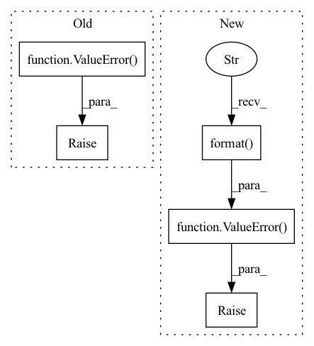

Pattern ID :165
Before Change
None for _ in range(num_blocks)
]
else:
raise ValueError( "Not support `out_channels`={}".format(out_channels))
net = []
for idx in range(num_blocks):
net.append(D2Block(in_channels, out_channels, kernel_size, depth=depth[idx], eps=eps))After Change
elif type(growth_rate) is list:
pass
else:
raise ValueError( "Not support `growth_rate`={}".format( growth_rate))
if depth is None:
depth = [
None for _ in range(num_blocks)In pattern: SUPERPATTERN
Frequency: 3
Non-data size: 5
Instances Fragment ID: 519850
Project Name: tky823/dnn-based_source_separation
Commit Name: 08ed4eac522e740d5bb22e99fb4f60bd3f8aadf1
Time: 2021-03-12
Author: 40362510+tky823@users.noreply.github.com
File Name: src/models/d3net.py
Class Name: D3Block
Method Name: __init__
Parent Class: nn.Module
Fragment ID: 519849
Project Name: replicable-marl/marllib
Commit Name: 229bfd1c9db33d2ff0761dbdbe21e47a47a9b87c
Time: 2023-02-23
Author: hhhusiyi@163.com
File Name: marllib/marl/models/zoo/rnn/base_rnn.py
Class Name: Base_RNN
Method Name: __init__
Parent Class: TorchRNN,nn.Module
Fragment ID: 519848
Project Name: maria-korosteleva/garment-pattern-estimation
Commit Name: 58004a47b8e9b3137f4c2616414bb5405d5647ed
Time: 2020-09-24
Author: mariako@kaist.ac.kr
File Name: nn/net_blocks.py
Class Name: EdgeConvFeatures
Method Name: __init__
Parent Class: nn.Module